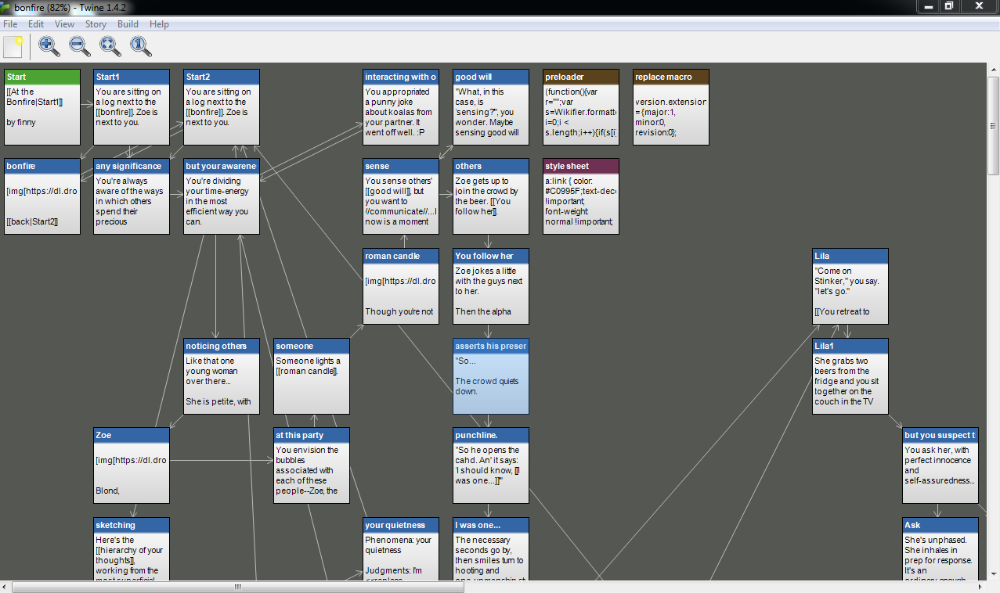
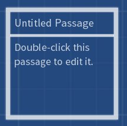
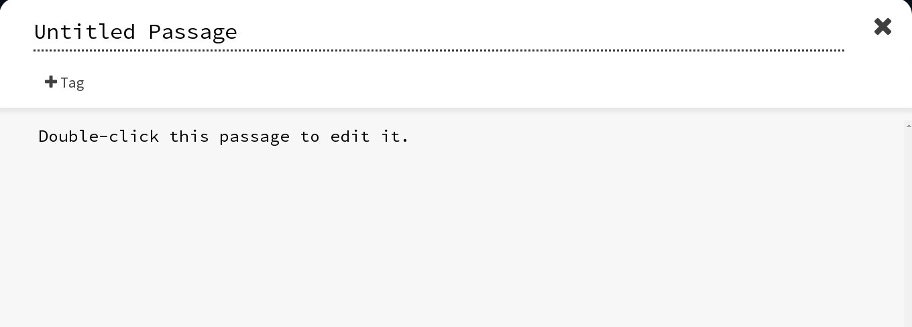
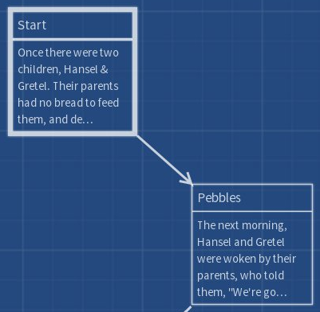

A free program for creating hypertext art.
twinery.org

Twine games are made of passages...

Double-click the passage to edit it.

Try editing the content of the first passage.
When you're ready, press Play
Enclose the name of another passage in [[square brackets]] to link it.

To link any text to a specific passage, split the bracket with a | symbol. Put the visible text on the left and the passage name on the right:
This is the surrounding text [[and this is the link|Passage Name goes here]]
It's easy to display images that are already online, for example on Flikr, using the following format:
<img src="URL HERE"/>
Select Publish to File from the menu to turn your Twine into an HTML file.
You can share Twines for free on:
You can change the look of your Twine game using the programming language CSS, just like any other webpage.
Variables let you store information, change it, and use it later.
Expressions let you add random variations to text, use mathematical calculations in your game, and more.